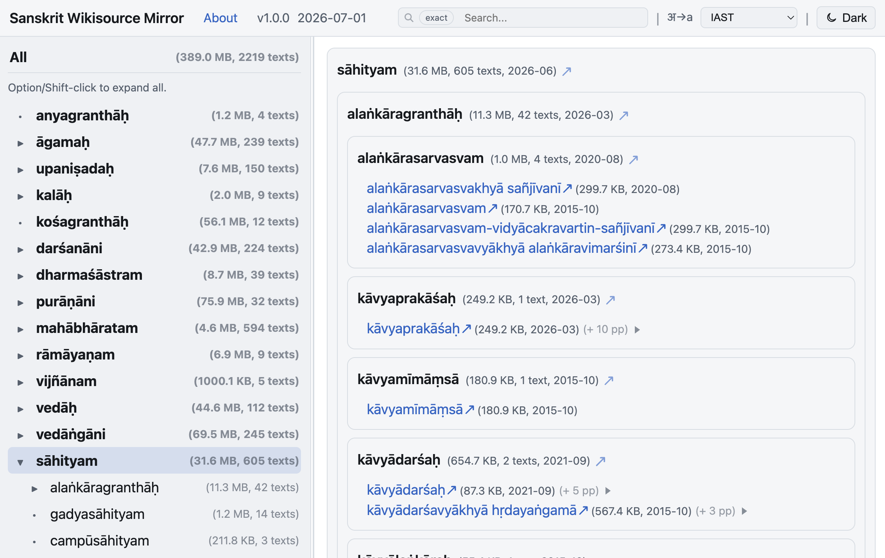

Skrutable
My first and most popular project—a minimalistic workspace for Sanskrit text-processing. It combines transliteration, meter calculations, word splitting, and OCR. Numerous special features, like meter-agnostic scansion, are those that have proven useful in my own academic work. Powerful enough for large-scale text processing, yet flexible for daily one-off tasks.

Pramāṇa NLP
This curated corpus of Sanskrit philosophy texts is my model of simple but informative text digitization for facilitating NLP work. Like my other work, it's open source and licensed under a Creative Commons Attribution-ShareAlike 4.0 International License, so go ahead, take a look, and download it for your own use if you want.

Vātāyana
Based on the Pramāṇa NLP corpus, this system reveals intertextual connections between Sanskrit texts using LDA topic modeling, TF-IDF, and local alignment. Deep-dive into individual passages or generate an intertextuality summary for an entire work in seconds.

Pāṇḍitya & SETI
Pāṇḍitya is a visual exploration tool for Sanskrit intellectual networks, building on Pandit Project. It helps researchers understand connections between scholars, texts, and traditions across the history of Sanskrit literature. SETI (Sanskrit E-Text Index) is a register of Sanskrit electronic texts, helping scholars discover and locate digitized Sanskrit materials across various repositories.


Sanskrit Wikisource Mirror
An alternate browsing interface for Sanskrit Wikisource's text collection, with cleaner navigation, transliteration options, and text sizes and page counts for context. A snapshot that points back to its source rather than re-hosting the underlying material.

Kalpataru Grove
A space for concisely articulating the vision of my interconnected Sanskrit projects.